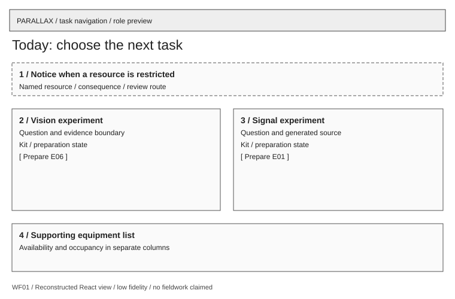

Today: choose the next task
A student finds preparation and their next action.

Hierarchy: Restriction notice, experiment choice, current journey state, supporting equipment list.
Recovery: Unavailable kit keeps the task visible and explains the blocker.
Next: Prepare E06 or E01; availability list is optional context.
Evaluate: DR01: review whether experiment choice and the next task are explicit; no student comprehension result.
Rubric: UI / UX / problem analysis
Research basis: S01 · S02 · S08
Decisions / requirements: D-U02-01 / Extension / no original R assigned
Boundary: Task-first entry is an authored choice, not a measured preference.
Open corresponding review surface → · Individual SVG